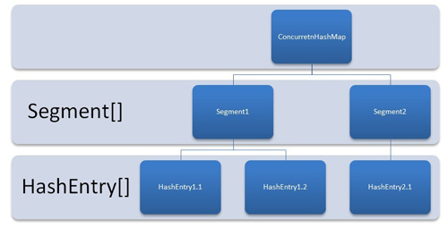

本文最后更新于：2020年8月10日 晚上
并发成为现代软件开发的基础能力，Java 精心设计的高效并发机制，是构建大规模应用的基础之一。本文介绍 Java 并发编程基础知识。主要内容为 线程生命周期、如何实现线程、synchronized与锁、volatile、线程池、并发包、CAS与原子操作。
进程与线程
进程
进程是应用程序在内存中分配的空间，也就是正在运行的程序，各个进程之间互不干扰。同时进程保存着程序每一个时刻运行的状态。进程的出现，使操作系统的性能大大提升，但是如果一个进程在一段时间只执行一个任务，那么当进程有多个子任务时，只能逐个执行这些子任务，效率较低。
线程
为了提高 CPU 和 IO 设备的综合利用率，线程个概念被提出并应用。线程是一个比进程更小的执行单位，一个进程包含了多个线程，同类的多个线程共享进程的堆和方法区资源，而程序计数器、虚拟机栈和本地方法栈是私有的，每个线程负责一个单独的子任务。
进程和线程的异同
进程是操作系统进行资源分配的基本单位，线程是系统调度的最小单元；
线程是程序执行的最小单位，更加轻量级，线程间的切换和调度的成本远远小于进程。多线程可以在多核 CPU 上同时运行，减少了线程上下文切换的开销；
多线程并发编程是高并发系统的基础，好多线程机制可以提高系统整体的并发能力及性能；
一个进程可以包含多个线程，线程作为任务的真正执行者，有自己的栈、寄存器、本地存储（Thread Local）等，但是会和进程内其他线程共享文件描述符、虚拟地址空间等；
Java 中进程的内存占用如下图所示

线程生命周期
线程的状态
Java 5 以后，线程生命周期的不同状态被明确定义在其公共内部枚举类型 java.lang.Thread.State 中，分别是：
新建（NEW），表示线程被创建出来还没真正启动的状态，可以认为它是个 Java 内部状态；
就绪（RUNNABLE），表示该线程已经在 JVM 中执行，当然由于执行需要计算资源，它可能是正在运行，也可能还在等待系统分配给它 CPU 片段，在就绪队列里面排队。在其他一些分析中，会额外区分一种状态 RUNNING，但是从 Java API 的角度，并不能表示出来；
阻塞（BLOCKED），这个状态和同步非常相关，阻塞表示线程在等待 Monitor lock。比如，线程试图通过 synchronized 去获取某个锁，但是其他线程已经独占了，那么当前线程就会处于阻塞状态；
等待（WAITING），表示正在等待其他线程采取某些操作。一个常见的场景是类似生产者消费者模式，发现任务条件尚未满足，就让当前消费者线程等待（wait），另外的生产者线程去准备任务数据，然后通过类似 notify 等动作，通知消费线程可以继续工作了。Thread.join() 也会令线程进入等待状态。计时等待（TIMED_WAIT），其进入条件和等待状态类似，但是调用的是存在超时条件的方法，比如 wait 或 join 等方法的指定超时版本，如下面示例：
public final native void wait(long timeout) throws InterruptedException;终止（TERMINATED），不管是意外退出还是正常执行结束，线程已经完成使命，终止运行。第二次调用 start() 方法的时候，线程可能处于终止或者其他（非 NEW）状态，但是不论如何，都不可以再次启动。
线程操作
- start()：启动线程并执行相应的 run() 方法；
- run()：子线程要执行的逻辑代码在 run() 中完成；
- sleep()：让当前线程停止执行，把 CPU 让给其他线程执行，但不会释放对象锁和监控的状态，到了指定时间后线程又会自动恢复运行状态；
- 注：线程睡眠到期自动苏醒，并返回到可运行状态，不是运行状态。sleep() 中指定的时间是线程不会运行的最短时间。因此，sleep()方法不能保证该线程睡眠到期后就开始执行；
- wait()：使一个线程处于等待（阻塞）状态，并且释放所持有的对象的锁；
- join()：t.join() 方法只会使主线程（调用 t.join() 的线程）进入等待池并等待 t线程 执行完毕后才会被唤醒。不影响同一时刻处在运行状态的其他线程；
- 使用场景示例：主线程创建并启动了线程，如果子线程中药进行大量耗时运算，主线程往往会早于子线程结束之前结束。如果主线程想等待子线程执行完成之后再结束，比如主线程要获取子线程处理的数据，就要用到 join() 方法；
- yield()：告诉调度器主动让出 CPU；
- 注：让出 CPU 不代表当前线程不执行了。当前线程让出 CPU 后，还会进行 CPU 资源的争夺，但是不保证一定能够再次分配到；
- getPriority()：获取当前线程的优先级；
- 注：两个等待的线程，优先级高的线程容易被 CPU 执行。优先级分为1~10等级，默认优先级是5；
- setPriority()：设置线程的优先级；
- getId()：取得线程唯一标识；
- isAlive()：判断当前线程是否处于活动状态，活动状态就是已经启动尚未终止；
- currentThread()：返回代码段正在被哪个线程调用；
- resume()、stop()、suspend() 方法被标记为过时，在 JDK 最新版本中，destory/stop 方法将被移除；
- 基类 Object 提供了一些基础的 wait() / notify() / notifyAll() 方法；
- 如果持有某个对象的 Monitor 锁，调用 wait 会让当前线程处于等待状态，直到其他线程 notify 或者 notifyAll。所以，这些方法本质上是提供了 Monitor 的获取和释放的能力，是基本的线程间通信方式；
- 并发类库中的工具，比如 CountDownLatch.await() 会让当前线程进入等待状态，直到 latch 被计数为 0，这可以看作是线程间通信的 Signal；
Java 中如何实现线程
线程创建方式
- 创建一个任务类继承 Thread 类，Thread类实现了Runnable接口，所以自定义的任务类也实现了Runnable接口；
- 扩展 java.lang.Thread 类来创建线程，java.lang.Thread 类主要有两个方法：
- start()：调用自定义对象的start()方法，可以启动线程；
- run()：run()方法定义了具体的任务代码或处理逻辑，Thread 的子类应该重写run()方法；
- 创建一个任务类对象，可以用 Thread 或者 Runnable 作为自定义的变量类型；
- 调用自定义对象的 start() 方法，启动一个线程；
- 扩展 java.lang.Thread 类来创建线程，java.lang.Thread 类主要有两个方法：
- 定义一个任务类实现 Runnable 接口；
- 实现 Runnable 接口中的 run() 方法；
- 定义了任务类后，为任务类创建一个任务对象；
- 任务必须在线程中执行，创建一个 Thread 类的对象，将前面创建的实现了 Runnable 接口的任务类对象作为参数传递给Thread类的构造方法；
- 调用Thread类对象的 start() 方法，启动一个线程。
synchronized 与锁
线程安全
线程安全是一个多线程环境下正确性的概念，也就是保证多线程环境下共享的、可修改的状态的正确性，这里的状态反映在程序中其实可以看作是数据。换个角度来看，如果状态不是共享的，或者不是可修改的，也就不存在线程安全问题。线程安全需要保证几个基本特性：
- 原子性：相关操作不会中途被其他线程干扰，一般通过同步机制实现；
- 可见性：一个线程修改了某个共享变量，其状态能够立即被其他线程知晓，通常被解释为将线程本地状态反映到主内存上，volatile 可以负责保证可见性的；
- 有序性：保证线程内串行语义，避免指令重排等；
synchronized 与 ReentrantLock
synchronized 是 Java 内建的同步机制，所以也称为 Intrinsic Locking，它提供了互斥的语义和可见性，当一个线程已经获取当前锁时，其他试图获取的线程只能等待或者阻塞在那里。
- Java 5 以前，synchronized 是仅有的同步手段，在代码中，synchronized 可以用来修饰方法，也可以使用在特定的代码块儿上，本质上 synchronized 方法等同于把方法全部语句用 synchronized 块包起；
- synchronized 依赖于 JVM，ReentrantLock 依赖于 API，synchronized 是依赖于 JVM 实现的，没有直接暴露给用户；ReentrantLock 是 JDK 层面实现的（需要 lock() 和 unlock() 方法配合 try/finally 来完成），所以可以查看它的源代码；
- ReentrantLock，是 Java 5 提供的锁实现，语义和 synchronized 基本相同。再入锁通过代码直接调用 lock() 方法获取，代码书写也更加灵活。ReentrantLock 提供了很多实用的方法，能够实现很多 synchronized 无法做到的细节控制，比如可以控制 fairness，也就是公平性，或者利用定义条件等。但是，编码中也需要注意，必须要明确调用 unlock() 方法释放，不然就会一直持有该锁；
- 与 synchronized 相比，ReentrantLock 增加了一些高级功能，主要有三点：等待可中断；可实现公平锁；可实现选择性通知（锁可以绑定多个条件）；
- synchronized 和 ReentrantLock 的性能不能一概而论，早期版本 synchronized 在很多场景下性能相差较大，在后续版本进行了较多改进，在低竞争场景中表现可能优于 ReentrantLock；
syschronized 实现原理
synchronized可以保证方法或者代码块在运行时，同一时刻只有一个方法可以进入到临界区，同时它还可以保证共享变量的内存可见性。
synchronized 同步代码块由一对 monitorenter / monitorexit 指令实现，Monitor 对象是同步的基本实现单元；同步方法（需要看JVM底层实现）依靠的是方法修饰符上的ACC_SYNCHRONIZED实现。
同步代码块：monitorenter指令插入到同步代码块的开始位置，monitorexit指令插入到同步代码块的结束位置，JVM需要保证每一个monitorenter都有一个monitorexit与之相对应。任何对象都有一个monitor与之相关联，当且一个monitor被持有之后，他将处于锁定状态。线程执行到monitorenter指令时，将会尝试获取对象所对应的monitor所有权，即尝试获取对象的锁；
同步方法：synchronized方法则会被翻译成普通的方法调用和返回指令如:invokevirtual、areturn指令，在VM字节码层面并没有任何特别的指令来实现被synchronized修饰的方法，而是在Class文件的方法表中将该方法的access_flags字段中的synchronized标志位置1，表示该方法是同步方法并使用调用该方法的对象或该方法所属的Class在JVM的内部对象表示Klass做为锁对象。
- Java 6 之前，Monitor 的实现完全依靠操作系统内部的互斥锁，因为需要进行用户态到内核态的切换，所以同步操作是一个重量级操作；
Monitor
Monitor 可以理解为一个同步工具，也可以描述为一种同步机制，它通常被描述为一个对象。与一切皆对象一样，所有的 Java 对象是天生的Monitor，每一个 Java 对象都有成为 Monitor 的潜质。因为在 Java 的设计中 ，每一个 Java 对象本身就带了一把看不见的锁，它叫做内部锁或者 Monitor 锁。
Monitor 是线程私有的数据结构，每一个线程都有一个可用 monitor record 列表，同时还有一个全局的可用列表。每一个被锁住的对象都会和一个 monitor 关联（对象头的 MarkWord 中的 LockWord 指向 monitor 的起始地址），同时 monitor 中有一个 Owner 字段存放拥有该锁的线程的唯一标识，表示该锁被这个线程占用。
锁
锁的优化
Java中每一个对象都可以作为锁：
普通同步方法，锁是当前实例对象；
静态同步方法，锁是当前类的class对象；
同步方法块，锁是括号里面的对象。
JDK 1.6 对锁的实现引入了大量的优化，如锁粗化（Lock Coarsening）、锁消除（Lock Elimination）、轻量级锁（Lightweight Locking）、偏向锁（Biased Locking）、适应性自旋（Adaptive Spinning）等技术来减少锁操作的开销。
锁粗化：减少不必要的紧连在一起的unlock，lock操作，将多个连续的锁扩展成一个范围更大的锁；
锁消除：通过运行时 JIT 编译器的逃逸分析来消除一些没有在当前同步块以外被其他线程共享的数据的锁保护，通过逃逸分析也可以在线程本地 Stack上进行对象空间的分配（同时还可以减少Heap上的垃圾收集开销）；
轻量级锁：实现的背后基于这样一种假设：在真实的情况下程序中的大部分同步代码一般都处于无锁竞争状态（即单线程执行环境），在无锁竞争的情况下完全可以避免调用操作系统层面的重量级互斥锁，取而代之的是在 monitorenter 和 monitorexit 中只需要依靠一条 CAS 原子指令就可以完成锁的获取及释放。当存在锁竞争的情况下，执行 CAS 指令失败的线程将调用操作系统互斥锁进入到阻塞状态，当锁被释放的时候被唤醒；
偏向锁：为了在无锁竞争的情况下避免在锁获取过程中执行不必要的 CAS 原子指令，因为 CAS 原子指令虽然相对于重量级锁来说开销比较小但还是存在非常可观的本地延迟；
适应性自旋：线程在获取轻量级锁的过程中执行 CAS 操作失败时，在进入与 monitor 相关联的操作系统重量级锁（mutex semaphore）前会进入忙等待然后再次尝试，当尝试一定的次数后如果仍然没有成功则调用与该 monitor 关联的 semaphore（即互斥锁）进入到阻塞状态。
锁的升级和降级
- 现代的（Oracle）JDK 中，JVM 对此进行了改进，提供了三种不同的 Monitor 实现，也就是常说的三种不同的锁：偏向锁（Biased Locking）、轻量级锁和重量级锁，大大改进了其性能；
- 锁的升级、降级，指的是 JVM 优化 synchronized 运行的机制，当 JVM 检测到不同的竞争状况时，会自动切换到适合的锁实现，这种切换就是锁的升级、降级；
- 当没有竞争出现时，默认会使用偏向锁。JVM 会利用 CAS 操作（compare and swap），在对象头上的 Mark Word 部分设置线程 ID，以表示这个对象偏向于当前线程，所以并不涉及真正的互斥锁。这样做的假设是基于在很多应用场景中，大部分对象生命周期中最多会被一个线程锁定，使用偏向锁可以降低无竞争开销；
- 如果有另外的线程试图锁定某个已经被偏斜过的对象，JVM 就需要撤销（revoke）偏向锁，并切换到轻量级锁实现。轻量级锁依赖 CAS 操作 Mark Word 来试图获取锁，如果重试成功，就使用普通的轻量级锁；否则，进一步升级为重量级锁；
- 有的观点认为 Java 不会进行锁降级。有的观点认为，锁降级是会发生的，当 JVM 进入安全点（SafePoint）的时候，会检查是否有闲置的 Monitor，然后试图进行降级。
volatile
当前的 Java 内存模型下，线程可以把变量保存本地内存中，而不是直接在主存中进行读写。这就可能造成一个线程在主存中修改了一个共享变量的值，而另外一个线程还继续使用它的本地内存中共享变量的副本，造成数据的不一致。
注：在多个线程之间能够被共享的变量被称为共享变量。共享变量包括所有的实例变量，静态变量和数组元素。他们都被存放在堆内存中，volatile 只作用于共享变量。
volatile 定义
java 编程语言允许线程访问共享变量，为了确保共享变量能被准确和一致的更新，线程应该确保通过排他锁单独获得这个变量。Java 语言提供了 volatile，在某些情况下比锁更加方便。如果一个字段被声明成 volatile，java 线程内存模型确保所有线程看到这个变量的值是一致的。
Volatile 是轻量级的 synchronized，它在多处理器开发中保证了共享变量的“可见性”。可见性指的是当一个线程修改一个共享变量时，另外一个线程能读到这个修改的值。
线程池
线程池的优点
池化技术的思想主要是为了减少每次获取资源的消耗，提高对资源的利用率。线程池提供了一种限制和管理资源的技术。 每个线程池维护一些基本统计信息，例如已完成任务的数量。
- 降低资源消耗：通过重复利用已创建的线程降低线程创建和销毁造成的消耗；
- *提高响应速度 *：当任务到达时，任务可以不需要的等待线程的创建就能立即执行；
- 提高线程的可管理性：线程是稀缺资源，如果无限制的创建，不仅会消耗系统资源，还会降低系统的稳定性，使用线程池可以进行统一的分配，调优和监控；
Executors
通常开发者可以利用 Executors 提供的通用线程池创建方法，创建不同配置的线程池，主要区别在于不同的 ExecutorService 类型或者不同的初始参数。Executors 目前提供了 5 种不同的线程池创建配置：
- newCachedThreadPool()：用来处理大量短时间工作任务的线程池，具有几个鲜明特点：它会试图缓存线程并重用，当无缓存线程可用时，就会创建新的工作线程；如果线程闲置的时间超过 60 秒，则被终止并移出缓存；长时间闲置时，这种线程池不会消耗什么资源。其内部使用 SynchronousQueue 作为工作队列；
- newFixedThreadPool(int nThreads)：重用指定数目（nThreads）的线程，底层使用的是无界的工作队列，任何时候最多有 nThreads 个工作线程是活动的。如果任务数量超过了活动队列数目，将在工作队列中等待空闲线程出现；如果有工作线程退出，将会有新的工作线程被创建，以补足指定的数目 nThreads；
- newSingleThreadExecutor()：工作线程数目被限制为 1，操作一个无界的工作队列，保证了所有任务的都是被顺序执行，最多会有一个任务处于活动状态，并且不允许使用者改动线程池实例，因此可以避免其改变线程数目；
- newSingleThreadScheduledExecutor() 和 newScheduledThreadPool(int corePoolSize)：创建的是个 ScheduledExecutorService，可以进行定时或周期性的工作调度，区别在于单一工作线程还是多个工作线程；
- newWorkStealingPool(int parallelism)：Java 8 加入这个创建方法，内部会构建ForkJoinPool，利用Work-Stealing算法，并行地处理任务，不保证处理顺序；
注：
- newFixedThreadPool 和 newSingleThreadExecutor：允许请求的队列长度为 Integer.MAX_VALUE ，可能堆积大量的请求，从而导致OOM。
- newCachedThreadPool 和 newScheduledThreadPool：允许创建的线程数量为 Integer.MAX_VALUE ，可能会创建大量线程，从而导致OOM。
ThreadLocal
ThreadLocal 是一个数据结构，有点像HashMap，可以保存”key : value”键值对，但是一个ThreadLocal只能保存一个，并且各个线程的数据互不干扰。
ThreadLocal<String> localName = new ThreadLocal();
localName.set("线程1");
String name = localName.get();在线程1中初始化了一个ThreadLocal对象 localName，并通过set方法，保存了一个值 线程1，同时在线程1中通过 localName.get() 可以拿到之前设置的值，但是如果在线程2中，拿到的将是一个null。
/**
* Returns the value in the current thread's copy of this
* thread-local variable. If the variable has no value for the
* current thread, it is first initialized to the value returned
* by an invocation of the {@link #initialValue} method.
*
* @return the current thread's value of this thread-local
*/
public T get() {
Thread t = Thread.currentThread();
ThreadLocalMap map = getMap(t);
if (map != null) {
ThreadLocalMap.Entry e = map.getEntry(this);
if (e != null) {
@SuppressWarnings("unchecked")
T result = (T)e.value;
return result;
}
}
return setInitialValue();
}
/**
* Sets the current thread's copy of this thread-local variable
* to the specified value. Most subclasses will have no need to
* override this method, relying solely on the {@link #initialValue}
* method to set the values of thread-locals.
*
* @param value the value to be stored in the current thread's copy of
* this thread-local.
*/
public void set(T value) {
Thread t = Thread.currentThread();
ThreadLocalMap map = getMap(t);
if (map != null)
map.set(this, value);
else
createMap(t, value);
}从源码可以看到，每个线程中都有一个 ThreadLocalMap 数据结构，当执行set方法时，其值是保存在当前线程的 threadLocals 变量中，当执行set方法中，是从当前线程的 threadLocals 变量获取。所以在线程1中set的值，对线程2来说是摸不到的，而且在线程2中重新set的话，也不会影响到线程1中的值，保证了线程之间不会相互干扰。
/**
* ThreadLocalMap is a customized hash map suitable only for
* maintaining thread local values. No operations are exported
* outside of the ThreadLocal class. The class is package private to
* allow declaration of fields in class Thread. To help deal with
* very large and long-lived usages, the hash table entries use
* WeakReferences for keys. However, since reference queues are not
* used, stale entries are guaranteed to be removed only when
* the table starts running out of space.
*/
static class ThreadLocalMap {
/**
* The entries in this hash map extend WeakReference, using
* its main ref field as the key (which is always a
* ThreadLocal object). Note that null keys (i.e. entry.get()
* == null) mean that the key is no longer referenced, so the
* entry can be expunged from table. Such entries are referred to
* as "stale entries" in the code that follows.
*/
static class Entry extends WeakReference<ThreadLocal<?>> {
/** The value associated with this ThreadLocal. */
Object value;
Entry(ThreadLocal<?> k, Object v) {
super(k);
value = v;
}
}
/**
* The initial capacity -- MUST be a power of two.
*/
private static final int INITIAL_CAPACITY = 16;
/**
* The table, resized as necessary.
* table.length MUST always be a power of two.
*/
private Entry[] table;
/**
* The number of entries in the table.
*/
private int size = 0;
/**
* The next size value at which to resize.
*/
private int threshold; // Default to 0
/**
* Set the resize threshold to maintain at worst a 2/3 load factor.
*/
private void setThreshold(int len) {
threshold = len * 2 / 3;
}
/**
* Increment i modulo len.
*/
private static int nextIndex(int i, int len) {
return ((i + 1 < len) ? i + 1 : 0);
}
/**
* Decrement i modulo len.
*/
private static int prevIndex(int i, int len) {
return ((i - 1 >= 0) ? i - 1 : len - 1);
}
/**
* Construct a new map initially containing (firstKey, firstValue).
* ThreadLocalMaps are constructed lazily, so we only create
* one when we have at least one entry to put in it.
*/
ThreadLocalMap(ThreadLocal<?> firstKey, Object firstValue) {
table = new Entry[INITIAL_CAPACITY];
int i = firstKey.threadLocalHashCode & (INITIAL_CAPACITY - 1);
table[i] = new Entry(firstKey, firstValue);
size = 1;
setThreshold(INITIAL_CAPACITY);
}
/**
* Construct a new map including all Inheritable ThreadLocals
* from given parent map. Called only by createInheritedMap.
*
* @param parentMap the map associated with parent thread.
*/
private ThreadLocalMap(ThreadLocalMap parentMap) {
Entry[] parentTable = parentMap.table;
int len = parentTable.length;
setThreshold(len);
table = new Entry[len];
for (int j = 0; j < len; j++) {
Entry e = parentTable[j];
if (e != null) {
@SuppressWarnings("unchecked")
ThreadLocal<Object> key = (ThreadLocal<Object>) e.get();
if (key != null) {
Object value = key.childValue(e.value);
Entry c = new Entry(key, value);
int h = key.threadLocalHashCode & (len - 1);
while (table[h] != null)
h = nextIndex(h, len);
table[h] = c;
size++;
}
}
}
}ThreadPoolExecutor
《阿里巴巴Java开发手册》中强制线程池不允许使用 Executors 去创建，而是通过 ThreadPoolExecutor 的方式，这样的处理方式让写的同学更加明确线程池的运行规则，规避资源耗尽的风险。
线程池创建
可以通过 ThreadPoolExecutor 创建一个线程池。
new ThreadPoolExecutor(corePoolSize, maximumPoolSize, keepAliveTime, milliseconds,runnableTaskQueue, handler);- corePoolSize（线程池的基本大小）：当提交一个任务到线程池时，线程池会创建一个线程来执行任务，即使其他空闲的基本线程能够执行新任务也会创建线程，等到需要执行的任务数大于线程池基本大小时就不再创建。如果调用了线程池的 prestartAllCoreThreads 方法，线程池会提前创建并启动所有基本线程；
- runnableTaskQueue（任务队列）：用于保存等待执行的任务的阻塞队列。可以选择以下几个阻塞队列：
- ArrayBlockingQueue：基于数组结构的有界阻塞队列，按 FIFO 原则对元素排序；
- LinkedBlockingQueue：基于链表结构的阻塞队列，按 FIFO 原则对元素排序，吞吐量通常高于 ArrayBlockingQueue。静态工厂方法 Executors.newFixedThreadPool() 使用了这个队列；
- SynchronousQueue：不存储元素的阻塞队列。每个插入操作必须等到另一个线程调用移除操作，否则插入操作一直处于阻塞状态，吞吐量通常要高于 LinkedBlockingQueue，静态工厂方法 Executors.newCachedThreadPool 使用了这个队列；
- PriorityBlockingQueue：具有优先级的无界阻塞队列；
- maximumPoolSize（线程池最大大小）：线程池允许创建的最大线程数。如果队列满了，并且已创建的线程数小于最大线程数，则线程池会再创建新的线程执行任务。值得注意的是如果使用了无界的任务队列这个参数就没什么效果；
- ThreadFactory：用于设置创建线程的工厂，可以通过线程工厂给每个创建出来的线程设置更有意义的名字；
- RejectedExecutionHandler（饱和策略）：当队列和线程池都满了，说明线程池处于饱和状态，那么必须采取一种策略处理提交的新任务。这个策略默认情况下是 AbortPolicy，表示无法处理新任务时抛出异常。以下是 JDK1.5 提供的四种策略：
- AbortPolicy：直接抛出异常；
- CallerRunsPolicy：只用调用者所在线程来运行任务；
- DiscardOldestPolicy：丢弃队列里最近的一个任务，并执行当前任务；
- DiscardPolicy：不处理，丢弃掉；
- 也可以根据应用场景需要来实现 RejectedExecutionHandler 接口自定义策略。如记录日志或持久化不能处理的任务；
- keepAliveTime（线程活动保持时间）：线程池的工作线程空闲后，保持存活的时间。所以如果任务很多，并且每个任务执行的时间比较短，可以调大这个时间，提高线程的利用率；
- TimeUnit（线程活动保持时间的单位）：可选的单位有天，小时，分钟，毫秒，微秒 (千分之一毫秒) 和毫微秒 (千分之一微秒)；
向线程池提交任务
可以通过 execute() 和 submit() 方法向线程池提交任务。
execute() 用于提交不需要返回值的任务，无法判断任务是否被线程池执行成功；
threadsPool.execute(new Runnable() { @Override public void run() { // TODO Auto-generated method stub } });
submit() 方法用于提交需要返回值的任务。线程池会返回一个 Future 类型的对象，通过 Future 对象可以判断任务是否执行成功，并且可以通过 Future 的 get() 方法获取返回值，get() 方法会阻塞当前线程直到任务完成，而 get(long timeout，TimeUnit unit) 方法则会阻塞当前线程一段时间后立即返回，这时候有可能任务没有执行完；
Future<Object> future = executor.submit(harReturnValuetask); try { Object s = future.get(); } catch (InterruptedException e) { // 处理中断异常 } catch (ExecutionException e) { // 处理无法执行任务异常 } finally { // 关闭线程池 executor.shutdown(); }
线程池关闭
可以通过调用线程池的 shutdown 或 shutdownNow 方法来关闭线程池，它们的原理是遍历线程池中的工作线程，然后逐个调用线程的 interrupt 方法来中断线程，所以无法响应中断的任务可能永远无法终止。
- shutdownNow 首先将线程池的状态设置成 STOP，然后尝试停止所有的正在执行或暂停任务的线程，并返回等待执行任务的列表；
- shutdown 只是将线程池的状态设置成 SHUTDOWN 状态，然后中断所有没有正在执行任务的线程；
只要调用了这两个关闭方法的其中一个，isShutdown 方法就会返回 true。当所有的任务都已关闭后, 才表示线程池关闭成功，这时调用 isTerminaed 方法会返回 true。至于调用哪一种方法来关闭线程池，应该由提交到线程池的任务特性决定。通常调用 shutdown 来关闭线程池，如果任务不一定要执行完，则可以调用 shutdownNow。
线程池工作流程
线程池的主要工作流程如下图所示：

当提交一个新任务到线程池时，线程池的处理流程如下：
- 首先线程池判断基本线程池是否已满？没满，创建一个工作线程来执行任务，否则：
- 其次线程池判断工作队列是否已满？没满，则将新提交的任务存储在工作队列里，否则：
- 最后线程池判断整个线程池是否已满？没满，则创建一个新的工作线程来执行任务，满了，则交给饱和策略来处理这个任务；
源码分析部分以及下面的线程池配置部分可以参见方腾飞老师JAVA 线程池的分析和使用的博客，以及 JavaGuide的线程池总结。
线程池配置
合理的配置线程池，需要从以下几个角度分析任务特性：
- 任务的性质：CPU 密集型任务，IO 密集型任务和混合型任务。
- 任务的优先级：高，中和低。
- 任务的执行时间：长，中和短。
- 任务的依赖性：是否依赖其他系统资源，如数据库连接。
Java 并发包
Java 提供了不同层面的线程安全支持。在传统集合框架内部，除了 Vector、Stack、Hashtable 等同步容器，还提供了同步包装器（Synchronized Wrapper），可以调用 Collections 工具类提供的包装方法，获取一个同步的包装容器（如 Collections.synchronizedMap），但是它们都是利用粗粒度的同步方式，高并发下性能较低。
鉴于Java 集合框架的典型容器类绝大多数都不是线程安全的且性能较低，Java 提供了并发包，为高度并发需求提供了更加全面的工具支持。
- 各种并发容器，如 ConcurrentHashMap、CopyOnWriteArrayList；
- 各种线程安全队列（Queue/Deque），如 ArrayBlockingQueue、SynchronousQueue；
- 各种有序容器的线程安全版本等；
线程安全的实现方式有简单的 synchronize 方式，也有更加精细化的，比如基于分离锁实现的 ConcurrentHashMap 等并发实现等。具体选择要看开发的场景需求。
ConcurrentHashMap
Java 1.6 版本的ConcurrentHashMap：
ConcurrentHashMap 由 Segment 数组结构和 HashEntry 数组结构组成。Segment 是一种可重入锁 ReentrantLock，在 ConcurrentHashMap 里扮演锁的角色，HashEntry 则用于存储键值对数据。一个 ConcurrentHashMap 里包含一个 Segment 数组，Segment 的结构和 HashMap 类似，是一种数组和链表结构， 一个 Segment 里包含一个 HashEntry 数组，每个 HashEntry 是一个链表结构的元素， 每个 Segment 守护者一个 HashEntry 数组里的元素，当对 HashEntry 数组的数据进行修改时，必须首先获得它对应的 Segment 锁。结构如下图所示：

Java 8 和之后的版本中，ConcurrentHashMap：
- 总体结构上，它的内部存储和 HashMap 结构非常相似，同样是大的桶（bucket）数组，内部也是的链表结构，同步的粒度要更细致一些（锁的颗粒度，是加在链表头上的）；
- 内部仍然有 Segment 定义，但仅仅是为了保证序列化时的兼容性，不再有任何结构上的用处；
- 因为不再使用 Segment，初始化操作大大简化，修改为 lazy-load 形式，这样可以有效避免初始开销；
- 数据存储利用 volatile 来保证可见性；
- 使用 CAS 等操作，在特定场景进行无锁并发操作；
- 使用 Unsafe、LongAdder 之类底层手段，进行极端情况的优化。
并发队列
队列是非常重要的数据结构，日常开发中很多线程间数据传递都要依赖于它，Executor 框架提供的各种线程池，同样无法离开队列。
实现一个线程安全的队列有两种实现方式：一种是使用阻塞算法，另一种是使用非阻塞算法。使用阻塞算法的队列可以用一个锁（入队和出队用同一把锁）或两个锁（入队和出队用不同的锁）等方式来实现，而非阻塞的实现方式则可以使用循环 CAS 的方式来实现。线程安全队列 ConcurrentLinkedQueue 是使用非阻塞的方式来实现的。
非阻塞队列
ConcurrentLinkedQueue
对于 ConcurrentLinkedQueue 的方法实现可以参见并发容器之 ConcurrentLinkedQueue 这篇文章。
Concurrent 类型基于 lock-free，在常见的多线程访问场景，一般可以提供较高吞吐量；
Concurrent 类型没有类似 CopyOnWrite 之类容器相对较重的修改开销；
Concurrent 往往提供了较低的遍历一致性。可以这样理解所谓的弱一致性，例如，当利用迭代器遍历时，如果容器发生修改，迭代器仍然可以继续进行遍历；
同步容器 ”fail-fast”：检测到容器在遍历过程中发生了修改，则抛出 ConcurrentModificationException，不再继续遍历；
弱一致性的另外一个体现是，size 等操作准确性是有限的，未必是 100% 准确；
与此同时，读取的性能具有一定的不确定性；
阻塞队列
阻塞队列（BlockingQueue）是一个支持两个附加操作的队列。这两个附加的操作是：在队列为空时，获取元素的线程会等待队列变为非空。当队列满时，存储元素的线程会等待队列可用。阻塞队列常用于生产者和消费者的场景，生产者是往队列里添加元素的线程，消费者是从队列里拿元素的线程。阻塞队列就是生产者存放元素的容器，而消费者也只从容器里拿元素。
对于阻塞队列，更加详细的介绍和分析参见 Java 中的阻塞队列 。
CopyOnWrite
CopyOnWrite 的原理是：任何修改操作，如 add、set、remove，都会拷贝原数组，修改后替换原来的数组，通过这种防御性的方式，实现另类的线程安全。适合读多写少的操作，不然修改的开销是比较高的。
这样做的好处在于，可以在并发的场景下对容器进行”读操作”而不需要”加锁”，从而达到读写分离的目的。从JDK 1.5 开始 Java 并发包里提供了两个使用 CopyOnWrite 机制实现的并发容器 ，分别是CopyOnWriteArrayList和CopyOnWriteArraySet 。CopyOnWriteArraySet 是通过包装了 CopyOnWriteArrayList 来实现的。
CopyOnWriteArrayList
优点
CopyOnWriteArrayList 经常被用于“读多写少”的并发场景，因为 CopyOnWriteArrayList 无需任何同步措施，增强了读的性能。Java 中遍历非线程安全的 List（如：ArrayList和 LinkedList）的时候，若中途有别的线程对List容器进行修改，会抛出ConcurrentModificationException异常。CopyOnWriteArrayList由于其”读写分离”，遍历和修改操作分别作用在不同的List容器，所以在使用迭代器遍历的时候，不会抛出异常。
缺点
- CopyOnWriteArrayList每次执行写操作都会将原容器进行拷贝了一份，数据量大的时候，内存会存在较大的压力，可能会引起频繁Full GC（ZGC没有使用Full GC）；
- 比如对象占用的内存200M左右，再写入100M数据进去，内存就会多占用300M；
- CopyOnWriteArrayList 由于实现的原因，写和读分别作用在不同新老容器上，写操作执行过程中，读不会阻塞，但读取到的却是老容器的数据；
操作分析
CopyOnWriteArrayList 的源码分析可以参见代码分析。
- CopyOnWriteArrayList 的 add 操作是先把原容器进行copy，然后在新的副本上进行“写操作”，最后再切换引用，在此过程中是加了锁的；
- remove 操作的逻辑是将要删除元素之外的其他元素拷贝到新的副本中，然后切换引用，再将原容器的引用指向新的副本中，因为 remove 操作也是写操作，所以也是要加锁的；
- get 操作是“读操作”，没有加锁，直接读取；
并发工具类
Java 并发包提供了比 synchronized 更加高级的各种同步结构，包括 CountDownLatch、CyclicBarrier、Semaphore 等，可以实现更加丰富的多线程操作，比如利用 Semaphore 作为资源控制器，限制同时进行工作的线程数量；
Semaphore，Java 版本的信号量的实现。
CountDownLatch，也叫做闭锁，允许一个或多个线程等待某些操作完成后再执行；
CyclicBarrier，一种辅助性的同步结构，允许多个线程等待到达某个屏障；
Semaphore
Java 提供了经典信号量（Semaphore）的实现，它通过控制一定数量的允许（permit）的方式，来达到限制通用资源访问的目的。类比如下场景：在车站、机场等出租车时，当很多空出租车就位时，为防止过度拥挤，调度员指挥排队等待坐车的队伍一次进来 5 个人上车，等这 5 个人坐车出发，再放进去下一批，这和 Semaphore 的工作原理有些类似。Semaphore 可以理解为计数器，其基本逻辑基于 acquire/release，没有太复杂的同步逻辑。
CountDownLatch
在多线程协作完成业务功能时，有时候需要等待其他多个线程完成任务之后，主线程才能继续往下执行业务功能，在这种的业务场景下，通常可以使用Thread类的join方法，让主线程等待被join的线程执行完之后，主线程才能继续往下执行。当然，使用线程间消息通信机制也可以完成。java并发工具类中提供了类似“倒计时”这样的工具类，可以十分方便的完成这种业务场景。
CountDownLatch内部会维护一个初始值为线程数量的计数器，主线程执行await方法，如果计数器大于0，则阻塞等待。当一个线程完成任务后，计数器值减1。当计数器为0时，表示所有的线程已经完成任务，等待的主线程被唤醒继续执行。
CountDownLatch主要方法
- await() throws InterruptedException：调用该方法的线程等到构造方法传入的N减到0的时候，才能继续往下执行；
- await(long timeout, TimeUnit unit)：与上面的await方法功能一致，加上时间限制，调用该方法的线程等到指定的timeout时间后，不管N是否减至为0，都会继续往下执行；
- countDown()：使CountDownLatch初始值N减1；
- long getCount()：获取当前CountDownLatch维护的值；
CyclicBarrier
CyclicBarrier也是一种多线程并发控制的实用工具，和CountDownLatch一样具有等待计数的功能。CyclicBarrier在使用一次后，下面依然有效，可以继续当做计数器使用，这是与CountDownLatch的区别之一。
CountDownLatch 与 CyclicBarrier 异同
- CountDownLatch 是不可以重置的，所以无法重用；而 CyclicBarrier 则没有这种限制，可以重用；
- CountDownLatch 的基本操作组合是 countDown/await。调用 await 的线程阻塞等待 countDown 足够的次数，不管是在一个线程还是多个线程里 countDown，只要次数足够即可。CountDownLatch 操作的是事件；
- CyclicBarrier 的基本操作组合，则就是 await，当所有的伙伴（parties）都调用了 await，才会继续进行任务，并自动进行重置。注意，正常情况下，CyclicBarrier 的重置都是自动发生的，如果调用 reset 方法，但还有线程在等待，就会导致等待线程被打扰，抛出 BrokenBarrierException 异常。CyclicBarrier 侧重点是线程，而不是调用事件，它的典型应用场景是用来等待并发线程结束。
Phaser
Java 并发类库还提供了Phaser，功能与 CountDownLatch 很接近，但是它允许线程动态地注册到 Phaser 上面，而 CountDownLatch 显然是不能动态设置的。Phaser 的设计初衷是，实现多个线程类似步骤、阶段场景的协调，线程注册等待屏障条件触发，进而协调彼此间行动。
CAS 与原子操作
死锁
死锁是一种特定的程序状态，实体之间由于循环依赖导致彼此一直处于等待之中，没有任何个体可以继续前进。死锁不仅仅是在线程之间会发生，存在资源独占的进程之间同样也可能出现死锁。通常来说，大多关注多线程场景中的死锁。两个或多个线程之间，由于互相持有对方需要的锁，而永久处于阻塞的状态。
定位死锁最常见的方式就是利用 jstack 等工具获取线程栈，然后定位互相之间的依赖关系，进而找到死锁。如果是比较明显的死锁，往往 jstack 等就能直接定位，类似 JConsole 甚至可以在图形界面进行有限的死锁检测。
public class DeadLockSample extends Thread {
private String first;
private String second;
public DeadLockSample(String name, String first, String second) {
super(name);
this.first = first;
this.second = second;
}
public void run() {
synchronized (first) {
System.out.println(this.getName() + " obtained: " + first);
try {
Thread.sleep(1000L);
synchronized (second) {
System.out.println(this.getName() + " obtained: " + second);
}
} catch (InterruptedException e) {
// Do nothing
}
}
}
public static void main(String[] args) throws InterruptedException {
String lockA = "lockA";
String lockB = "lockB";
DeadLockSample t1 = new DeadLockSample("Thread1", lockA, lockB);
DeadLockSample t2 = new DeadLockSample("Thread2", lockB, lockA);
t1.start();
t2.start();
t1.join();
t2.join();
}
}乐观锁与悲观锁
锁可以从不同的角度分类。其中，乐观锁和悲观锁是一种分类方式。
悲观锁
悲观锁就是常说的锁。悲观锁总是认为每次访问共享资源时会发生冲突，所以必须对每次数据操作加上锁，以保证临界区的程序同一时间只能有一个线程在执行。
乐观锁
乐观锁又称为“无锁”。乐观锁总是假设对共享资源的访问没有冲突，线程可以不停地执行，无需加锁也无需等待。而一旦多个线程发生冲突，乐观锁通常使用 CAS 来保证线程执行的安全性。由于无锁操作中没有锁的存在，因此不可能出现死锁的情况。
悲观锁多用于”写多读少“的环境，避免频繁失败和重试影响性能。乐观锁多用于“读多写少“的环境，避免频繁加锁影响性能。
CAS 定义
比较并交换(compare and swap, CAS)，是原子操作的一种，可用于在多线程编程中实现不被打断的数据交换操作，从而避免多线程同时改写某一数据时由于执行顺序不确定性以及中断的不可预知性产生的数据不一致问题。 该操作通过将内存中的值与指定数据进行比较，当数值一样时将内存中的数据替换为新的值。
- 记录下某块内存中的旧值；
- 对旧值进行一系列的操作后得到新值；
- 通过CAS操作将新值与旧值进行交换：
- 如果这块内存的值在这期间内没被修改过，则旧值会与内存中的数据相同，这时CAS操作将会成功执行，使内存中的数据变为新值；
- 如果内存中的值在这期间内被修改过，则一般来说旧值会与内存中的数据不同，这时CAS操作将会失败，新值将不会被写入内存。
int cas(long *addr, long old, long new)
{
/* Executes atomically. */
if(*addr != old)
return 0;
*addr = new;
return 1;
}Java 实现CAS的原理
CAS 是一种原子操作。在 Java 中，如果一个方法是native的，那 Java 就不负责具体实现它，而是交给底层的JVM使用 C 或者 C++ 实现。在 Java 中，Unsafe 类里面是一些native方法，其中有几个关于 CAS。这些方法都是都是public native的。
boolean compareAndSwapObject(Object o, long offset,Object expected, Object x);
boolean compareAndSwapInt(Object o, long offset,int expected,int x);
boolean compareAndSwapLong(Object o, long offset,long expected,long x);Unsafe 中对 CAS 的实现使用 C++，它的具体实现和操作系统、CPU都有关系。
Linux的 x86 下主要通过cmpxchgl这个指令在 CPU 级完成CAS操作，但在多处理器情况下必须使用lock指令加锁来完成。
Unsafe类里面还有其它方法用于不同的用途。比如支持线程挂起和恢复的park和unpark， LockSupport类底层就是调用了这两个方法。还有支持反射操作的 allocateInstance() 方法。
CAS 实现原子操作的三个问题
ABA 问题
ABA问题，就是一个值原来是A，变成了B，又变回了A。这个时候使用CAS是检查不出变化的，但实际上却被更新了两次。
ABA问题的解决思路是在变量前面追加上版本号或者时间戳。JDK 1.5 开始，JDK 的 atomic 包里提供了一个类AtomicStampedReference 类来解决ABA问题。这个类的 compareAndSet 方法的作用是：
- 首先检查当前引用是否等于预期引用，并且检查当前标志是否等于预期标志；
- 如果二者都相等，才使用 CAS 设置为新的值和标志。
public boolean compareAndSet(V expectedReference,
V newReference,
int expectedStamp,
int newStamp) {
Pair<V> current = pair;
return
expectedReference == current.reference &&
expectedStamp == current.stamp &&
((newReference == current.reference &&
newStamp == current.stamp) ||
casPair(current, Pair.of(newReference, newStamp)));
}循环时间长开销大
CAS多与自旋结合。如果 CAS 自旋长时间不成功，CPU 资源的开销很大。
解决思路是让 JVM 支持处理器提供的 pause 指令。pause 指令能让自旋失败时 CPU 睡眠一小段时间再继续自旋，从而使得读操作的频率低很多，为解决内存顺序冲突而导致的CPU流水线重排的代价也会小很多。
自旋锁
竞争锁的失败的线程，并不会真实的在操作系统层面挂起等待，JVM 会让线程做几个空循环（基于预测在不久的将来就能获得），经过若干次循环后，如果可以获得锁，那么进入临界区，如果还不能获得锁，才会真实的将线程在操作系统层面进行挂起。
自旋锁适用场景：自旋锁可以减少线程的阻塞，对于锁竞争不激烈，且占用锁时间非常短的代码块来说，性能有较大的提升，因为自旋的消耗会小于线程阻塞挂起操作的消耗。反之，如果锁的竞争激烈，或者持锁的线程需要长时间占用锁执行同步块，就不适合使用自旋锁，因为自旋锁在获取锁前一直都是占用 CPU 做无用功，线程自旋的消耗大于线程阻塞挂起操作的消耗，造成 CPU 的浪费。
适应自旋锁
JDK 1.6 引入了更聪明的自旋锁，即自适应自旋锁。自适应意味着自旋的次数不再是固定的，它由前一次在同一个锁上的自旋时间及锁的拥有者的状态来决定。线程如果自旋成功了，那么下次自旋的次数会更加多，因为虚拟机认为既然上次成功了，那么此次自旋也很有可能会再次成功，那么它就会允许自旋等待持续的次数更多。反之，如果对于某个锁，很少有自旋能够成功的，那么在以后要或者这个锁的时候自旋的次数会减少甚至省略掉自旋过程，以免浪费处理器资源。
有了自适应自旋锁，随着程序运行和性能监控信息的不断完善，虚拟机对程序锁的状况预测会越来越准确，虚拟机会变得越来越聪明。
只能保证一个共享变量的原子操作
CAS可以保证单个共享变量的原子操作，对于多个共享变量，CAS无法保证原子性。
JDK 1.5 开始提供了 AtomicReference 类，保证对象之间的原子性。所以可以把多个（共享）变量封装进一个对象，然后通过 AtomicReference 类保证引用对象之间的原子性。
使用锁：锁内的临界区代码可以保证只有当前线程能操作；
常见面试题
synchronized 和 volatile 的区别
- synchronized 关键字解决的是多个线程之间访问资源的同步性；
- volatile 关键字是线程同步的轻量级实现，因为它不会引起线程上下文的切换和调度，所以比 synchronized 的使用和执行成本会更低，性能比 synchronized 好；
- volatile 只能用于变量，synchronized 关键字可以修饰方法以及代码块；
- 多线程访问 volatile 关键字不会发生阻塞，synchronized 关键字可能会发生阻塞；
- volatile 关键字能保证数据的可见性，但不能保证数据的原子性，synchronized 关键字两者都能保证。
sleep() 和 wait() 方法异同
- 都可以暂停线程的执行；
- 最主要的区别在于：sleep() 方法没有释放锁，而 wait() 方法释放了锁；
- wait() 通常被用于线程间交互/通信，sleep() 通常被用于暂停执行；
- wait() 方法被调用后，线程不会自动苏醒，需要别的线程调用同一个对象上的 notify() 或者 notifyAll() 方法；sleep() 方法执行完成后，线程会自动苏醒。或者可以使用 wait(long timeout) 超时后线程会自动苏醒；
start() 方法会执行 run()，为什么不直接调用 run() 方法
- new 一个 Thread，线程进入了新建状态；
- 调用 start() 方法，会启动一个线程并使线程进入了就绪状态，当分配到时间片后就可以开始运行；
- start() 会执行线程的相应准备工作，然后自动执行 run() 方法的内容，这是真正的多线程工作；
- 直接执行 run() 方法，会将 run() 其当成 main 线程下的一个普通方法去执行，并不会在某个线程中执行它，所以这并不是多线程工作；
总结： 调用 start() 方法方可启动线程并使线程进入就绪状态，而 run() 方法只是 thread 的一个普通方法调用，还是在主线程里执行。
AtomicInteger 底层实现原理
AtomicIntger 是对 int 类型的一个封装，提供原子性的访问和更新操作，其原子性操作的实现是基于 CAS（compare-and-swap）技术。
在静态方法和非静态方法上加 synchronized的区别
synchronized修饰非静态方法，实际上是对调用该方法的对象加锁，俗称“对象锁”；
情况1：同一个对象在两个线程中分别访问该对象的两个同步方法
- 结果：会产生互斥；
- 解释：因为锁针对的是对象，当对象调用一个synchronized方法时，其他同步方法需要等待其执行结束并释放锁后才能执行。
情况2：不同对象在两个线程中调用同一个同步方法；
- 结果：不会产生互斥；
- 解释：因为是两个对象，锁针对的是对象，并不是方法，所以可以并发执行，不会互斥。形象的来说就是因为我们每个线程在调用方法的时候都是new 一个对象，那么就会出现两个空间，两把钥匙，
synchronized修饰静态方法，实际上是对该类对象加锁，俗称“类锁”
情况1：用类直接在两个线程中调用两个不同的同步方法
结果：会产生互斥；
解释：因为对静态对象加锁实际上对类（.class）加锁，类对象只有一个，可以理解为任何时候都只有一个空间，里面有N个房间，一把锁，因此房间（同步方法）之间一定是互斥的；
注：上述情况和用单例模式声明一个对象来调用非静态方法的情况是一样的，因为永远就只有这一个对象。所以访问同步方法之间一定是互斥的。
情况2：用一个类的静态对象在两个线程中调用静态方法或非静态方法；
- 结果：会产生互斥；
- 解释：因为是一个对象调用，同上。
情况3：一个对象在两个线程中分别调用一个静态同步方法和一个非静态同步方法
- 结果：不会产生互斥；
- 解释：因为虽然是一个对象调用，但是两个方法的锁类型不同，调用的静态方法实际上是类对象在调用，即这两个方法产生的并不是同一个对象锁，因此不会互斥，会并发执行；
参考资料
JDK1.8 源码
Java 并发编程实战
本博客所有文章除特别声明外，均采用 CC BY-SA 4.0 协议 ，转载请注明出处！